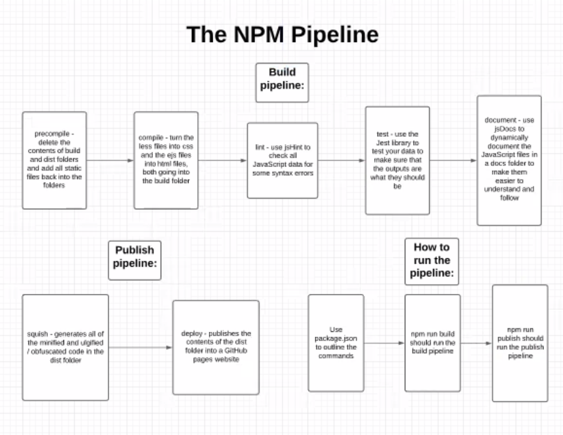

Vocabulary
Zip Code: A zip code is a five (and sometimes nine) digit number code used to specify a particular neighborhood in the United States. Each neighborhood has a unique zip code.
NYC Restaurant Scores: After an inspection, a restaurant is given a score along with a grade to help differentiate with more than just a letter. Similarly to golf, a lower score is better: 0-13 denotes an A restaurant, 14-27 denotes a B restaurant, and 28+ denotes a C restaurant.
NYC Restaurant Grades: New York City has required restaurants to post letter grades that correspond to scores received from sanitary inspections. The conversions between score and grade are mentioned above. Grade cards must be posted where they can easily be seen by people passing by. This website compiles all the data of NYC restaurant grades in order to give viewers an easy way to determine what some of the best (and worst) restaurants are in various neighborhoods throughout NYC. A restaurant can be given a grade of A, B, or C. Restaurants that are awaiting inspection or have pending results are given N (not yet graded), Z (grade pending), and P (grade pending after a restaurant contested a grade they received).
Restaurant Inspection: During an inspection, a state or local inspector visits a restaurant and checks all of the parts of the restaurant for various standards. They check the quality of food, cleanliness in the kitchen, sanitation in the seating area, insect and rodent population, and much more while determining a final score and grade.
Wireframe Analysis: Design Principles and Heuristics
Jameson's Macro Summary Wireframe

Jameson's Micro Summary Wireframe

Nick's Macro Summary Wireframe

Nick's Micro Summary Wireframe

Which Pieces of Each Wireframe We Used and Why:
In each of our MacroPage wireframe designs, we proposed using a map of NYC's zipcodes both to present data on the average inspection score of each zipcode and to provide links to the individual micropages for each zipcode (by clicking on particular areas of the map), so we included that in our final design. Additionally, from Nick's design, we incorporated his graph of the total number of each letter grade (A, B, C, Z, N, and P) as we thought it would give viewers an idea of how frequently restaurants receive an A grade, as well as Nick's method of listing links to every zipcode, separated by borough, at the bottom of the MacroPage to make it easy for users to search for one particular zipcode and visit that zipcode's micropage. As for Jameson's MacroPage design, we used his general color scheme as we thought it fit together well, and we actually took the graph from his MicroPage design comparing the average score for each zipcode with the average score for that zipcode's borough and that of the entire city, and we used it to compare the average score of each borough with each other and with the average score of NYC as a whole.
In both of our MicroPage wireframes, we proposed a graph (as mentioned briefly above) comparing the average inspection score of each zip code with that of its borough and of the entire city, so we automatically included that in our final MicroPage design. We also combined Jameson's MicroPage header (the zip code, followed by its borough) with Nick's method of creating a text-based summary about that zipcode into one "jumbotron" at the top of each MicroPage. Finally, similarly to the MacroPage, we included Nick's graph of the total number of each grade (A, B, C, Z, N, and P), but this time using the totals from each particular zipcode.
Understandability
Our project wireframes feature macro- and micro-pages that display our data in a format that users can easily comprehend. We both made bar graphs of the number of various grades within each zip code. The drawings also include a map on the macro-page that displays the average score of each zip code to users in a single, easily comparable format. The pages are also simple to navigate - large buttons, bright graphs, and interactive elements - that users can intuitively navigate.
Structure
To make each of our drawings as strong as possible, we organized each page wihth extra attention paid to the overall structure and continuity of each web page. The most effective data-driven websites take readers on a journey through the various data representations in a way that is easy to follow. Our wireframes organized each page so that each subsequent piece clearly related back to not only the overall macro-page, but the other parts of the micro-pages. We have graphical representations of the data on top and correlate the data with a list of the top few restuarants to check out in each zip code. In this way, the data is highlighted on the web page and the relevant results of tbat data (like where to go to have the best dining experience) follow right after on the page.
Simplicity
Our wireframes both cut to the chase, if you will. The maps we drew provide a straightforward overview of New York City's restaurant data at a glance, and each subsequent graph goes into detail about just the average scores or just the grade distribution. We made sure to cut out all of the irrevelant information from our data sets so that the user can understand the story we are telling without being inundated with random data. Our wireframs also highlight the top few restaurants in each zip code, so that users are provided with a list of only three must-try restaurants in each zip code (we didn't want users to be prompted to visit all 300 A restaurants in a zip code, that's not realistic).
Achievability
The main goal of our wireframes was to take data that was easily-accessible and turn it into physical grpahical representations. Thus, our wireframes were very achievable because all of the data is available on one website: NYC OpenDATA. We plan to use Plotly to format all of our graphs, which we also think won't be too hard for us to achieve. The only trouble we foresee with how accessible every aspect of our project is will be the NYC Zipcode SVG, since we are going to have to code much of that from scratch.
Our Division of Labor
As we had hoped, we were able to split up the work on this project almost exactly 50-50, using a common GitHub repository and occasionally Atom Teletype to keep each other updated on our progress. At the beginning of the project, Nick focused largely on gathering and cleaning our data, converting the data from .csv files to two different .json files (one with data for each restaurant and one with aggregate data for each zipcode), which we used throughout the remainder of the project. Jameson, on the other hand, worked a lot on the visual design of the project, centering much of his attention on what some of the best ways to display the data to viewers might be. He worked extensively on the EJS template files, incorporating various Plotly graphs, and after a lot of research, he found a way to edit a pre-existing SVG of the NYC zipcodes to both become "clickable" and to represent the aggregate inspection score data for each zipcode through its fill color. Then, Jameson and Nick split up, with Jameson focusing on the final layout of the micropages and Nick focusing on the final layout of the macropages. Finally, when it came time to implement the development pipeline, Jameson and Nick worked together, often over video conference, to try and learn their way around this relatively new topic and implement it to properly automate the process of putting this website together.
NPM Pipeline Visual
NPM Pipeline Description
The NPM Pipeline helps automate the process of compiling all of the necessary files for website creation in addition to the processes that check and clarify the various elements of the pages. We outline the various scripts and Terminal commands necessary to run each step of the process on its own, but the npm run build and publish streamline that process substantially. In our project, we used the npm run build command to run the precompile, compile, lint, test, and documentation process all in one Terminal command. A second Terminal command, npm run publish, runs the squish and deploy commands. So, in order to run our NPM Pipeline, open the Terminal, navigate to this project folder, and enter the command line "npm run build" and wait for it to complete. Next, enter "npm run publish" into the Terminal. You have now run our NPM Pipeline and created your very own build and dist folder! Have fun discovering some new, delicious restaurants in the diverse assortemnt of cuisines that make up New York City!